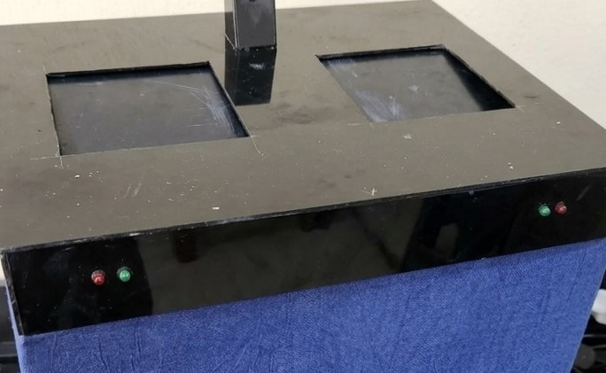

Smart Waste Segregation Using TinyML
2026An embedded AI system for waste classification (Plastic and Metals) using TinyML, and automated sorting. Uses an ESP32-CAM to capture waste images and performs classification on the edge device.
Project details